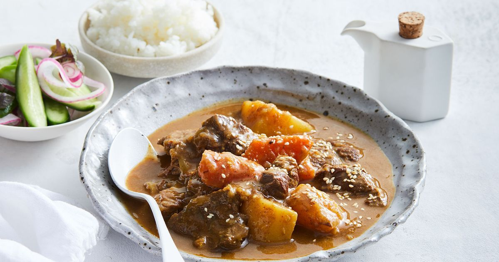

Japanese Beef Curry

Description
Japanese-style beef curry, easy to make! Serve with freshly cooked rice.
Ingredients
- 1 tablespoon olive oil
- 1 pound beef stew meat, cut into 1/2-inch cubes
- 2 medium onions, diced
- 5 medium carrots, cut into 1/4-inch rounds
- 6 cups warm water, or more as needed
- 3 large potatoes, peeled and cut into 1/2-inch cubes
- 2 (3.5 ounce) containers curry sauce mix (such as S&B® Golden Curry®)